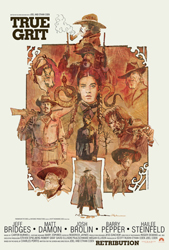
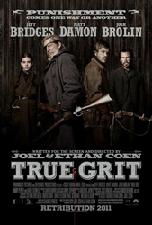
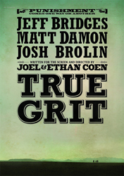
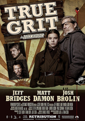
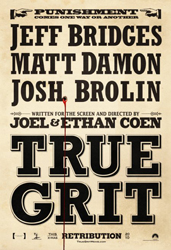

Jeff Bridges
Hailee Steinfeld
Leon Russom
David Lipman
Joe Stevens
Candyce Hinkle
Peter Leung
Dakin Matthews
Orlando Smart
Ed Lee Corbin
Paul Rae
Domhnall Gleeson
Josh Brolin
Don Pirl
Roger Deakins
Following the murder of her father by hired hand Tom Chaney, 14-year-old farm girl Mattie Ross sets out to capture the killer. To aid her, she hires the toughest U.S. marshal she can find, a man with "true grit," Reuben J. "Rooster" Cogburn. Mattie insists on accompanying Cogburn, whose drinking, sloth, and generally reprobate character do not augment her faith in him. Against his wishes, she joins him in his trek into the Indian Nations in search of Chaney. They are joined by Texas Ranger LaBoeuf, who wants Chaney for his own purposes. The unlikely trio find danger and surprises on the journey, and each has his or her "grit" tested.
Ahead of shooting, Ethan Coen said that the film would be a more faithful adaptation of the novel than the 1969 version, which starred John Wayne. The book is written entirely in the voice of the young girl. Mattie Ross "is a pill", said Ethan Coen in a December 2010 interview, "but there is something deeply admirable about her in the book that we were drawn to", including the Presbyterian-Protestant ethic so strongly imbued in a 14-year-old girl. Joel Coen said that the brothers did not want to "mess around with what we thought was a very compelling story and character".
There are subtle ways in which the film adaptation differs from the original novel. This is particularly evident in the negotiation scene between Mattie and her father's undertaker. In the film, Mattie bargains over her father's casket and proceeds to spend the night among the corpses to avoid paying for the boarding house. This scene is, in fact, nonexistent in the novel, where Mattie is depicted as refusing to bargain over her father's body, and never entertains the thought of sleeping among the corpses.
Open casting sessions were held in Texas in November 2009 for the role of Mattie Ross. The following month, Paramount Pictures announced a casting search for a 12- to 16-year-old girl, describing the character as a "simple, tough as nails young woman" whose "unusually steely nerves and straightforward manner are often surprising". Steinfeld, then age 13, was selected for the role from a pool of 15,000 applicants. "It was, as you can probably imagine, the source of a lot of anxiety", Ethan Coen told The New York Times. "We were aware if the kid doesn't work, there's no movie".
The film was shot in the Santa Fe, New Mexico, area in March and April 2010, as well as in Granger and Austin, Texas. For the final segment of the film, a one-armed body double was needed for Elizabeth Marvel (who played the adult Mattie). After a nationwide call, the Coen Brothers cast Ruth Morris - a 29-year-old social worker and student who was born without a left forearm.




